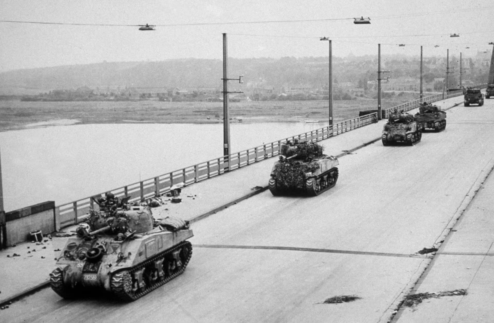

A Operação Market Garden ocorreu entre 17 e 25 de setembro de 1944 e foi uma das maiores ofensivas aerotransportadas da Segunda Guerra. Seu objetivo era capturar pontes estratégicas na Holanda, sobretudo em Arnhem, para abrir caminho rumo à Alemanha. O plano unia forças aéreas lançadas atrás das linhas inimigas (“Market”) com o avanço terrestre britânico (“Garden”). Caso tivesse sucesso, permitiria invadir rapidamente o Ruhr, centro industrial alemão. Porém, a ambição do plano superou suas condições logísticas reais
No início, os paraquedistas aliados conquistaram algumas pontes menores, mas encontraram forte resistência em Arnhem. A presença inesperada de divisões blindadas alemãs, subestimada pela inteligência, dificultou o avanço. As comunicações falharam, o mau tempo atrasou suprimentos e o apoio aéreo foi limitado. Além disso, o avanço terrestre pelo “Hell’s Highway” foi lento e vulnerável a contra-ataques. Esses fatores impediram a junção efetiva entre forças aerotransportadas e terrestres
A falha em capturar Arnhem resultou em derrota estratégica, adiando a invasão da Alemanha. Os Aliados sofreram cerca de 15 a 17 mil baixas, entre mortos, feridos e prisioneiros. A Holanda permaneceu parcialmente sob domínio nazista até 1945, agravando o sofrimento civil no “inverno da fome”. A operação demonstrou os riscos de planos militares excessivamente ambiciosos diante de condições desfavoráveis. Tornou-se um estudo clássico sobre falhas de logística, inteligência e coordenação militar